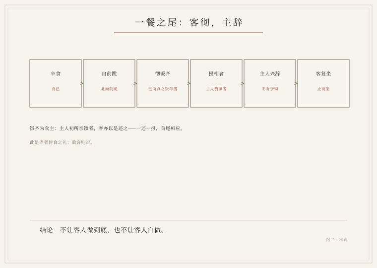

曲礼上 · 一·七十四 · 第 72 课
吃完了，卑客从坐前跪下，把自己吃的饭与酱亲手撤下，交给主人管馔的人；主人起身辞谢，不让客人亲撤，客人才复坐。
说什么事：卒食，客自前跪，彻饭齐，以授相者。主人兴，辞于客，然后客坐。
落在哪一层：仪。上节讲食之法，此节讲食之终。
为何编在此位：一·七十三讲入口之事，此节讲出口之后——一餐的收束也有礼。
【经】卒食，客自前跪，徹飯齊，以授相者。主人興，辭於客，然後客坐。
【注】謙也。自，從也。齊，醬屬也。相者，主人讚饌者，《公食大夫禮》：「賓卒食，北面取粱與醬以降也。」不聽親徹。
卒食 疏：「卒食，食已也。」
自前跪 疏：「食坐在前，面向，候客食竟，加于俎。起从坐前北面，当以坐而跪。」即从坐前转身跪下。
彻饭齐 注「齐，酱属也」。疏：「彻已所食饭与齐，饭齐食主，故答主人初所亲馈者也。」
以授相者 注「相者，主人赞馔者」。疏：「宾以所彻饭齐以授之。」
主人兴，辞于客，然后客坐 注「不听亲彻」。疏：「主人起，辞不听自彻，则客亦止而坐也。」
此是卑者 疏：「此是卑者，侍食之客耳，若敌者则否。」
吃完了，客人从坐前跪下，把自己吃的饭与酱撤下，交给主人管馔的人。主人起身辞谢（不让客人亲撤），客人才复坐。
一节写一餐的收尾：客自撤，主辞止。开头（一·六十）客起而辞，收尾客跪而彻，中间主人两度起身。一餐自始至终，宾主各有其动作，礼因此成为一个完整的圆。
第一层 亲彻是谦 注首字「谦也」。客自己吃的饭与酱，自己撤，不外推于人。此条与今日「客走主人收」正相反，其意在「不以己之余累人」。
第二层 饭齐是食主 疏：「饭齐食主，故答主人初所亲馈者也。」主人起初亲馈的是饭与酱，客撤的也正是这两样——一还一报，首尾相应。
第三层 相者 主人管馔之人。客以所彻授之，不由己持出，是「交接有主」，不越主人之仆。
第四层 不听亲彻 主人必辞。客欲谦，主人不许其太谦；一让一止，两得。礼在此处的分寸是：谦不可过，过则主人不安。
与今日何干 今人饭毕，客欲收碗，主人必拦。此节的形状仍在，只是跪改成了起身。可取的仍是那条：不让客人做到底，也不让客人白做。
| 左 | 右 |
|---|---|
| 卒食 | 食已 |
| 客自前跪 | 从坐前北面跪 |
| 彻饭齐 | 己所食之饭与酱；答主人初所亲馈 |
| 授相者 | 主人赞馔者，非客之从者 |
| 主人兴，辞于客 | 不听亲彻 |
| 然后客坐 | 客止而复坐 |
画席上一只饭器与一只酱器，两器已被并拢、双双端离原处（席面留两处清楚的器痕）；席边站着一只空的小槃（相者所持），槃心朝上。席角另有一双并拢的屦。不画人、不写文字。赭色只在饭器口沿与槃沿。
